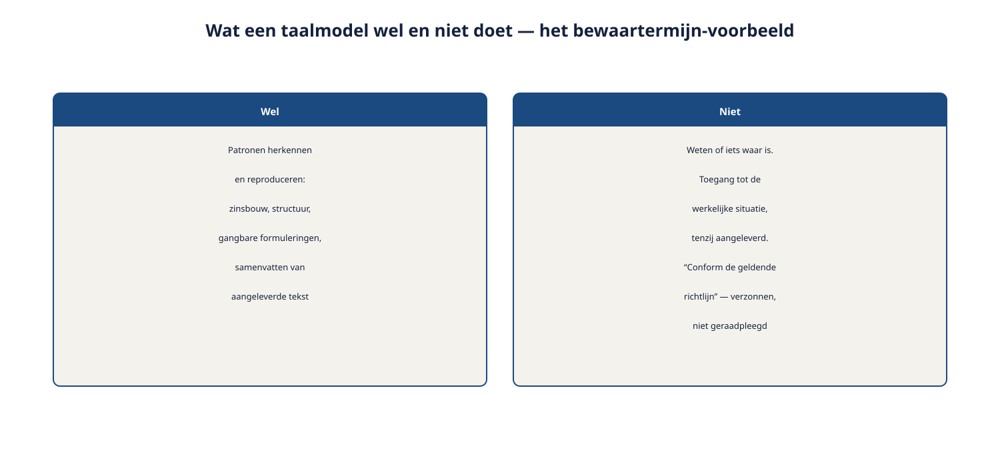
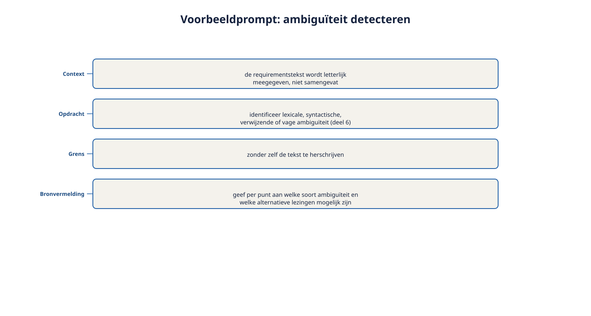

Deel 20 — AI-ondersteund requirements engineering (AI4RE)
Reader · Ductus-cursus Requirements engineering · niveau 2 (professional) · deel 20 van 22
Cursus Requirements Engineering — Ductus. Dit deel staat op zichzelf: het vereist geen voorkennis van de andere delen van niveau 2 en kan los worden gevolgd. Waar het naar de Wegwijzer-casus verwijst, dient dat als illustratie, niet als vereiste context. Deze cursus bereidt voor op de CPRE-certificering van IREB, waaronder de micro-credential AI4RE, en is uitdrukkelijk geen vervanging van het officiële syllabus- en examenmateriaal.
Leerdoelen
Na dit deel kun je:
- in eigen woorden uitleggen wat een taalmodel wel en niet doet in de context van requirements engineering;
- prompt engineering toepassen op concrete RE-taken;
- de belangrijkste risico's van AI-ondersteuning in RE benoemen: hallucinatie, bias, vertrouwelijkheid;
- uitleggen waarom verantwoordelijkheid voor een requirement bij de mens blijft, ook als AI het concept genereerde;
- per RE-activiteit (eliciteren, documenteren, valideren, beheren) een passende, verantwoorde vorm van AI-ondersteuning benoemen.
20.1 De hallucinatie die bijna meeging
Ruben experimenteert met een AI-assistent om, op basis van zijn interviewnotities, een eerste concept van requirements te laten genereren. Het resultaat oogt professioneel: nette zinnen, een logische structuur, zelfs een paar scherpe formuleringen die hij zelf niet had bedacht. Bij het doorlezen valt hem één requirement op die hij zich niet herinnert te hebben besproken: een specifieke bewaartermijn, met een concreet aantal jaren erbij, "conform de geldende richtlijn".
Er blijkt geen geldende richtlijn te zijn die dit aantal jaren voorschrijft — niet in zijn notities, niet in enig document dat hij heeft aangeleverd. De AI heeft het aantal verzonnen, in een vorm die overtuigend genoeg oogde om bijna zonder controle te worden overgenomen.
Dit is geen incident dat AI-ondersteuning diskwalificeert. Het is precies waarom dit deel bestaat: AI kan requirements engineering aanzienlijk versnellen, en het brengt een specifiek risico met zich mee dat je moet herkennen om er verantwoord mee te werken.
20.2 Wat een taalmodel wel en niet doet
Een taalmodel (large language model, LLM) is getraind om, op basis van patronen in enorme hoeveelheden tekst, waarschijnlijke vervolgtekst te genereren. Dat klinkt technisch, maar de praktische consequentie is eenvoudig te onthouden:
Wat het wel doet: patronen herkennen en reproduceren — zinsbouw, structuur, veelvoorkomende manieren om iets te formuleren, samenvattingen van tekst die je zelf aanlevert.
Wat het niet doet: weten of iets waar is, toegang hebben tot de werkelijke situatie tenzij die expliciet is aangeleverd, of een gevoel van verantwoordelijkheid voor de consequenties van een fout.
Een taalmodel dat een bewaartermijn "conform de geldende richtlijn" noemt, doet dat omdat zinnen met die structuur vaak in trainingsdata voorkwamen — niet omdat het de daadwerkelijke richtlijn heeft geraadpleegd. Dit is geen gebrek dat met een volgende versie automatisch verdwijnt; het is een fundamentele eigenschap van hoe deze modellen werken.

20.3 Prompt engineering voor RE-taken
Prompt engineering is het doelbewust formuleren van de instructie aan een taalmodel om een bruikbaarder, betrouwbaarder resultaat te krijgen. Vier technieken die direct toepasbaar zijn op RE-werk.
Geef duidelijke context mee. Een AI die alleen "schrijf een requirement over een risicoprofielkeuze" krijgt, vult zelf in wat er ontbreekt — vaak plausibel klinkend, maar niet gebaseerd op jouw daadwerkelijke situatie. Voeg de relevante notities, de belanghebbende, en het doel expliciet toe.
Vraag expliciet om bronvermelding en onzekerheid. Een instructie als "geef aan welke onderdelen van je antwoord uit de aangeleverde tekst komen, en welke je zelf hebt aangevuld" dwingt een onderscheid af dat anders onzichtbaar blijft — en had het bewaartermijn-incident in paragraaf 20.1 zichtbaar gemaakt.
Vraag om alternatieven, niet om één antwoord. In lijn met het ijsbergmodel (deel 4, niveau 1): een AI die drie mogelijke formuleringen van een requirement genereert, met de verschillen benoemd, is bruikbaarder dan een AI die er één met schijnzekerheid presenteert.
Verfijn iteratief. Begin met een grove opzet, beoordeel kritisch, en stuur bij met een preciezere instructie — net zoals je bij elicitatie (deel 4) niet verwacht in één gesprek de volledige behoefte te achterhalen.

Voorbeeldtoepassing — ambiguïteit detecteren: in plaats van een AI te vragen "verbeter deze requirement", vraag je: "identificeer in de volgende tekst mogelijke lexicale, syntactische, verwijzende of vage ambiguïteit (zie deel 6, niveau 1 voor de definities), zonder zelf de tekst te herschrijven — geef per gevonden punt aan welke soort ambiguïteit het betreft en welke alternatieve lezingen mogelijk zijn." Dit levert een controleerbare analyse op, in plaats van een output waarin de AI zelf al (mogelijk onterecht) een keuze heeft gemaakt.
20.4 Risico's en verantwoordelijkheid
Hallucinatie. Een AI kan een bron, een detail, of een "feit" verzinnen dat overtuigend klinkt maar niet bestaat — precies wat in paragraaf 20.1 gebeurde. In combinatie met bevinding R3 en R4 uit niveau 1 (oplossingen als eisen, ambiguïteit) is dit extra gevaarlijk: een AI-gegenereerde requirement kan een oplossing verpakken als eis, of een schijnbaar precieze formulering geven die bij nader inzien nergens op gebaseerd is — zonder dat dit meteen opvalt, juist omdat de tekst zo vloeiend oogt.
Bias. Patronen uit de trainingsdata van een taalmodel weerspiegelen de teksten waarop het is getraind — die zijn niet neutraal en passen niet automatisch bij de specifieke context van jouw organisatie of doelgroep. Een AI die "gebruiksvriendelijke" voorbeeldrequirements genereert, kan onbewust uitgaan van een gebruiker die niet representatief is voor de werkelijke doelgroep van Wegwijzer.
Vertrouwelijkheid. Gevoelige informatie — deelnemergegevens, interne beleidsstukken, concrete casuïstiek met herleidbare details — mag niet zomaar in een extern AI-systeem worden ingevoerd. Dit raakt direct aan de AVG en, bij Wegwijzer specifiek, aan zorgplicht: een AI-tool die buiten de organisatie draait, is een nieuwe partij die toegang krijgt tot gevoelige gegevens, met alle vragen over grondslag en beveiliging die daarbij horen (deel 8, niveau 1, kwaliteitseisen rond beveiliging).

De kern: de mens blijft verantwoordelijk. Dit is een directe toepassing van de rolgrens uit deel 1 (niveau 1): de requirements engineer levert feiten, opties en consequenties; het besluit ligt bij anderen. Een AI die een conceptrequirement genereert, verandert deze rolgrens niet — de AI levert een concept of een optie, nooit een besluit. Wie een AI-gegenereerde requirement zonder controle overneemt, laat de AI feitelijk het besluit nemen, ook al voelt dat niet zo. De verantwoordelijkheid voor een requirement verschuift nooit naar de AI, ongeacht wie of wat de tekst heeft opgesteld.
20.5 Use cases per RE-activiteit
Terug naar de vier kernactiviteiten uit deel 1 (niveau 1): eliciteren, documenteren, valideren, beheren. Voor elk een verantwoorde vorm van AI-ondersteuning.
Eliciteren. AI als voorbereidingshulp: een conceptvragenlijst voor een interview genereren op basis van wat je al weet, of een lange sessie samenvatten zodat je sneller de hoofdpunten terugvindt. Niet: het gesprek zelf vervangen — het luisteren, doorvragen en de menselijke aandacht uit deel 4 blijven onvervangbaar.
Documenteren. Conceptformuleringen genereren volgens het Ductus-sjabloon (deel 6, niveau 1), of een eerste ambiguïteitscontrole op een tekst uitvoeren (zoals het voorbeeld in paragraaf 20.3). Niet: een requirement definitief vaststellen zonder menselijke controle op inhoud en herkomst.
Valideren. Een eerste, checklist-achtige review van een requirement tegen bekende kwaliteitscriteria (bijvoorbeeld: bevat deze zin een trigger, is de modaliteit moet/mag consistent toegepast — deel 6, niveau 1). Niet: een AI-oordeel accepteren als vervanging van een echt gesprek met de belanghebbende (deel 9, niveau 1: valideren toetst tegen de werkelijke behoefte, iets wat een AI niet kan waarnemen).
Beheren. Traceerbaarheidslinks suggereren op basis van tekstuele overeenkomsten, of een eerste inschatting van wijzigingsimpact genereren als startpunt voor de impactanalyse (deel 18) — nooit als het definitieve antwoord. Niet: een prioriteitsbesluit of een wijzigingsbesluit laten nemen door een AI — dat blijft, net als in deel 1 en deel 14, bij de mens die daarvoor het mandaat heeft.

20.6 De grens: waar AI ondersteunt, waar de mens beslist
Een samenvattend overzicht, met de rolgrens als leidend principe.
| RE-activiteit | AI ondersteunt bij | De mens beslist over |
|---|---|---|
| Eliciteren | Voorbereiding, samenvatten | Het gesprek zelf, de interpretatie |
| Documenteren | Conceptformulering, ambiguïteitscheck | De uiteindelijke, vastgestelde tekst |
| Valideren | Eerste checklist-review | Of de requirement de echte behoefte dekt |
| Beheren | Suggesties voor links, eerste impactinschatting | Prioriteit, wijzigingsbesluit |
De rode draad: AI levert snelheid en een eerste concept; de mens levert oordeel en verantwoordelijkheid. Dit onderscheid verandert niet naarmate AI-modellen beter worden — een preciezere AI blijft een AI zonder verantwoordelijkheidsgevoel, en de rolgrens uit deel 1 (niveau 1) blijft daarom net zo relevant, ongeacht de kwaliteit van het gereedschap.
20.7 Certificeringsaansluiting: AI4RE
De micro-credential AI4RE van IREB toetst kennis van AI-basisbegrippen, LLM's, prompt engineering, risico's en verantwoordelijkheid, en concrete toepassingen in requirements engineering — precies de onderwerpen van dit deel. Het examen bestaat uit een beperkt aantal meerkeuzevragen met een relatief hoge score-eis, en kent geen formele toelatingseis.
Controleer bij het inplannen van een echt examen altijd de actuele voorwaarden en syllabusversie bij de certificeerder — deze kunnen wijzigen.
Dit deel bereidt inhoudelijk voor op die micro-credential, maar is — net als de rest van deze cursus — geen vervanging van het officiële oefenmateriaal.
Samenvatting
- Een taalmodel herkent en reproduceert patronen in taal; het weet niet of iets waar is en heeft geen toegang tot jouw werkelijke situatie tenzij die is aangeleverd.
- Prompt engineering voor RE: duidelijke context, expliciet vragen om bronvermelding en onzekerheid, alternatieven in plaats van één antwoord, iteratief verfijnen.
- Drie risico's: hallucinatie, bias, vertrouwelijkheid — elk met directe raakvlakken naar wat je al in niveau 1 en niveau 2 hebt geleerd.
- De verantwoordelijkheid voor een requirement blijft bij de mens, ongeacht wie of wat de tekst genereerde — een directe toepassing van de rolgrens uit deel 1.
- Per RE-activiteit (eliciteren, documenteren, valideren, beheren): AI ondersteunt met snelheid en een eerste concept, de mens beslist en draagt de verantwoordelijkheid.
Begrippen
taalmodel (LLM) · prompt engineering · hallucinatie · bias · vertrouwelijkheid · AI4RE
Leeswijzer
Dit deel staat op zichzelf en kan op elk moment in de cursus worden gevolgd. Voor deelnemers die niveau 2 in volgorde doorlopen: deel 21 opent de RE@Agile-module en daarmee spanningsveld 4, het laatste van Wegwijzer.